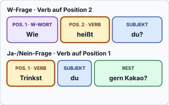

Asking and Answering W-Questions
Learn with an AI tutor
An AI tutor explains this page to you and helps you with the exercises. Choose your assistant:
Open with Claude Open with ChatGPT Open with Mistral Vibe
You use your own account with the provider. The assistant is not offered by lernapps.net: lernapps only provides the content and the exercises. The choice holds for all pages, on this device only.
Peter Asks His Way Around Lindenberg
In his first days Peter has many questions for Nadia and Herr Braun: Wo ist der Sportplatz? Wann beginnt der Unterricht? Wer ist das?

© CC0-1.0In W-questions the question word fills Position 1 — the verb stays locked in Position 2.
Exercise
Solution
Right answer: wer – who (person); was – what (thing / activity); wann – when (time); wie – how (manner / name / feeling)
Almost all German question words start with W — they always stand in Position 1, right before the verb.
Three Place Words: wo, woher, wohin
English where splits into three German W-words depending on direction:
| W-word | Meaning | Example |
|---|---|---|
| wo | where (location, no movement) | Wo wohnst du? — In Lindenberg. |
| woher | where from (origin) | Woher kommst du? — Aus den USA. |
| wohin | where to (destination) | Wohin gehst du? — In die Schule. |
Wie heißt du? — not Was!
To ask someone's name in German, use Wie: Wie heißt du? (literally How are you called?).
Practice
Exercise
Choose the right question word for each question.
- Where are you from, Peter? — From Boston. → … kommst du, Peter?
- Where are you going now? — To the bakery. → … gehst du jetzt?
- Where is the train station? — In the center. → … ist der Bahnhof?
- When does German class start? — At eight o'clock. → … beginnt der Deutschunterricht?
Solution
- Woher kommst du, Peter?
- Wohin gehst du jetzt?
- Wo ist der Bahnhof?
- Wann beginnt der Deutschunterricht?
wo asks for a location, woher for origin (from), wohin for destination (to), and wann for time.
Exercise
Solution
Right answer: 1. Wann, 2. beginnt, 3. die Schule, 4. in Lindenberg?
Wann (Pos. 1) + beginnt (Pos. 2 verb) + die Schule (subject) + in Lindenberg?
Exercise
Write each W-question in German. Keep the verb in Position 2!
- Who is that?
- What are you learning? (du)
Solution
- Wer ist das?
- Was lernst du?
German W-questions never add an extra do/are: W-word (Pos. 1) + conjugated verb (Pos. 2) + subject.
Found a mistake or have an idea for this app?